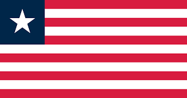
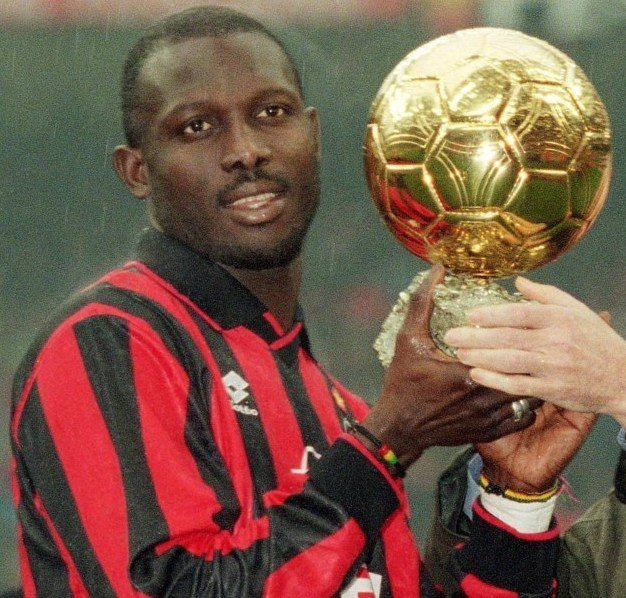
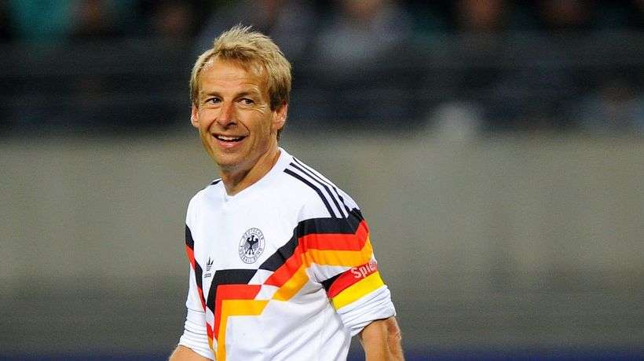
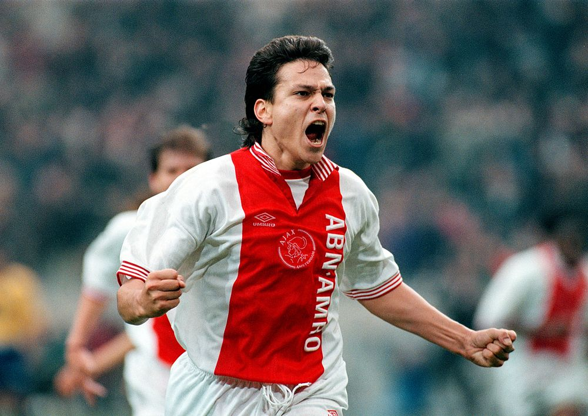
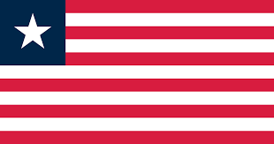
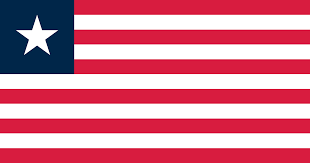

George WEAH - 1995 

- Il est le premier joueur non européen à remporter ce trophée et le seul
originaire du continent africain
Attaquant de renom,
George Weah
remporte en 1995 le Ballon d'or récompensant le meilleur joueur évoluant en Europe.
Nationalité : franco-libérienne
Né le : 1er octobre 1966, à Monrovia (LIB)
Taille : 1,84
Poids : 82 kg
Poste : attaquant
Clubs : Young Survivors of Claretown (1981-1983), Bongrang Company of Bonguine (1983), Mighty Barole (1984), Invincible Eleven Monrovia (1985-1987), Tonnerre Yaoundé (1987-1988), Monaco (1988-1992), Paris-SG (1992-1995), Milan AC (1995-janvier 2000), Chelsea (janvier- juin 2000), Manchester City (juillet-octobre 2000), Marseille (octobre 2000-2001) et Al-Jazira (2002-2003)
Palmarès : Championnat du Cameroun 1988 ; Championnat de France 1994; Championnat d'Italie 1996 et 1999 ; Coupe de France 1991, 1993 et 1995 ; Coupe d'Angleterre 2000 ; Coupe de la Ligue 1995 ; Supercoupe d'Italie 1996.
Bilan en club : 560 matchs, 267 buts
Bilan en phase finale de Coupe du monde : néant
Palmarès Ballon d'Or : vainqueur 1995 ; Ballon d'Or africain 1989 et 1994
Classement du Ballon d’Or France Football 1995 :
George Weah (Liberia / Milan AC),
144 pts.

Jürgen Klinsmann (Allemagne / Bayern Munich),
108 pts.

Jari Litmanen (Finlande / Ajax Amsterdam),
67 pts.
Retour à l'accueil
 George WEAH - 1995 
George WEAH - 1995 